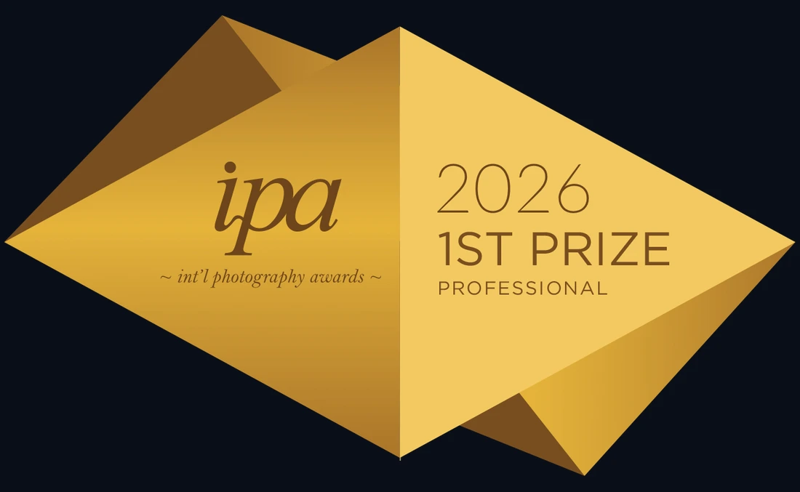
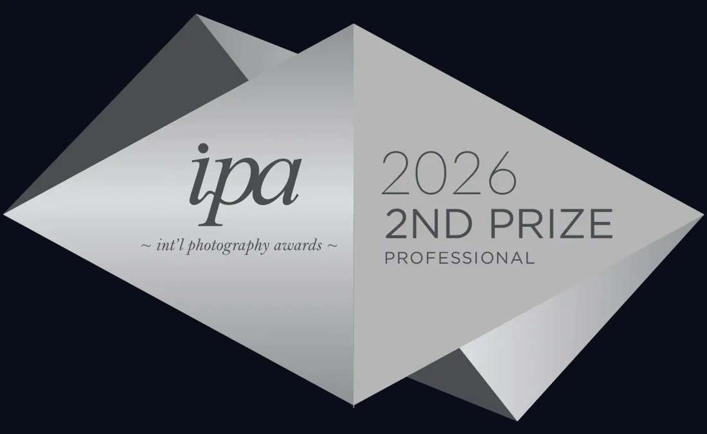
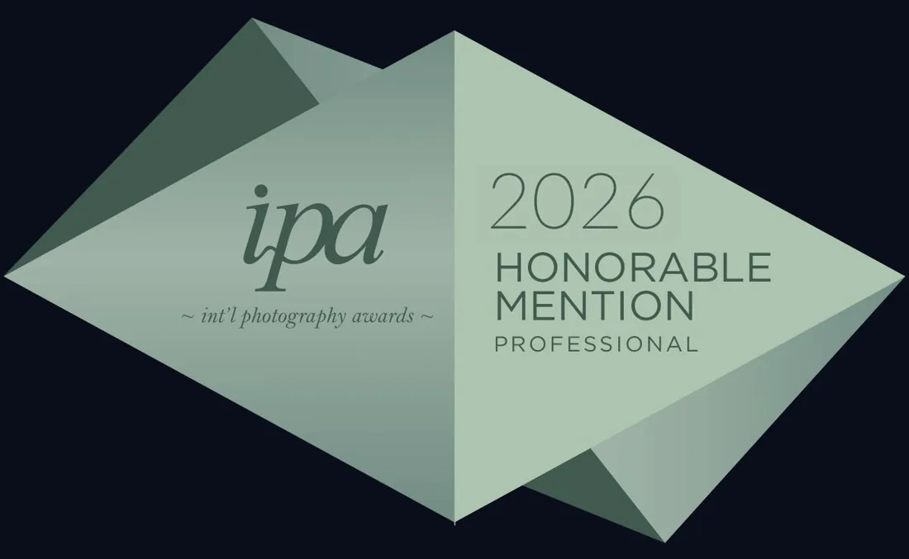
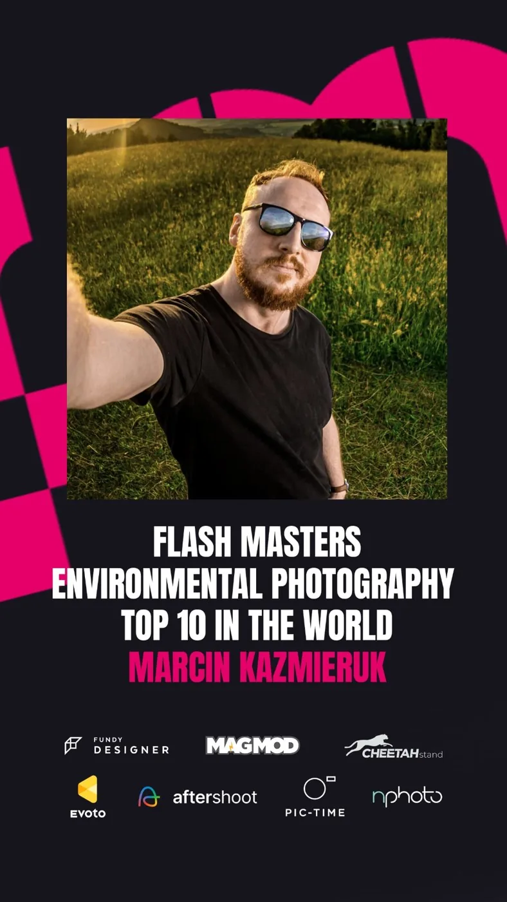
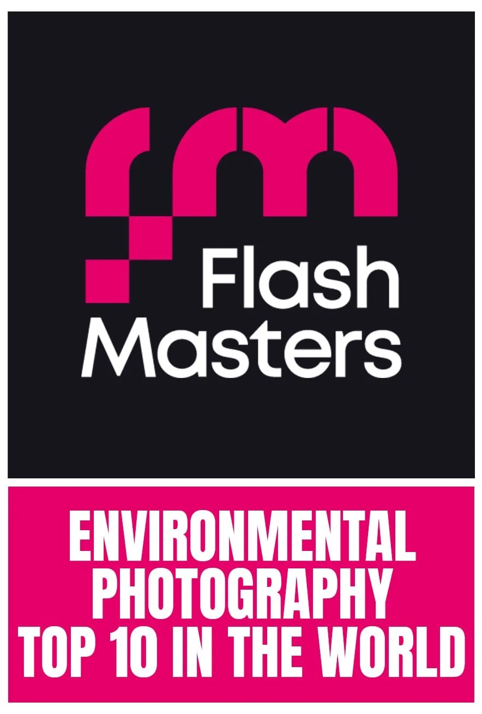
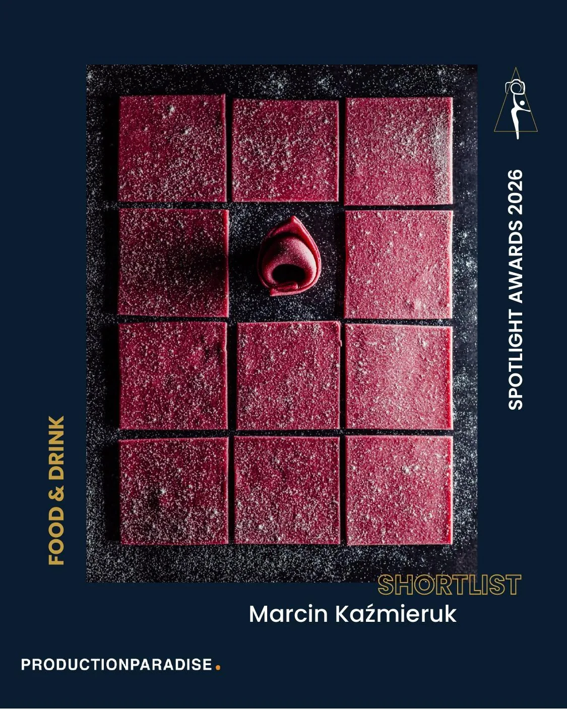
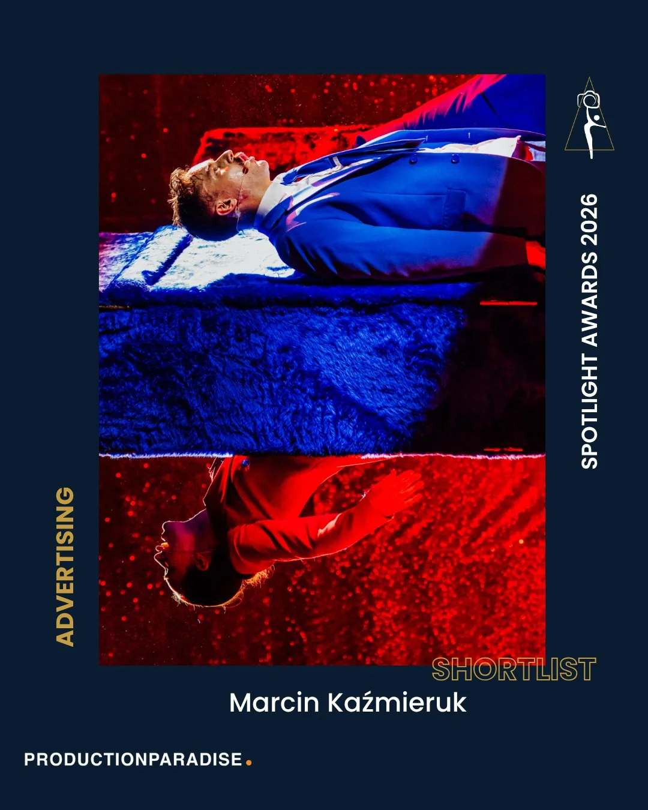
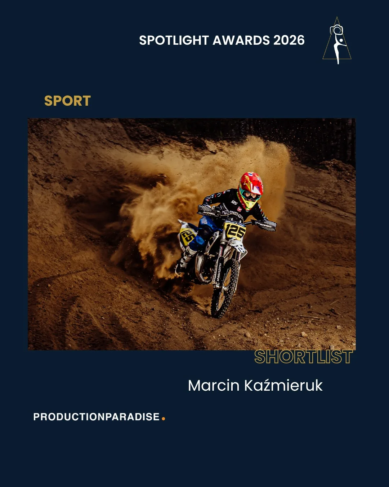

Dorobek, który mówi sam za siebie
Kilkanaście lat pracy, nagrody krajowe i międzynarodowe, publikacje w ogólnopolskiej prasie. Oto najważniejsze z nich.
Co stoi za każdą z nich
Za każdą z tych nagród stoją lata pracy i setki kadrów. Oto te, które znaczą dla mnie najwięcej, i dlaczego.

Numer jeden, wypracowany przez cały rok
Numer jeden na świecie w Foodelii to nie jeden szczęśliwy kadr. Foodelia liczy punkty przez cały rok, więc żeby być pierwszym, trzeba dowozić najwyższą jakość konsekwentnie, danie po daniu, przez dwanaście miesięcy. To tytuł, z którego jestem najbardziej dumny, bo stoi za nim rok pracy i wytrwałość, a nie przypadek.



Pierwsze miejsce, w ocenie całego świata
IPA to jeden z najbardziej prestiżowych konkursów fotograficznych na świecie, z tysiącami zgłoszeń z kilkudziesięciu krajów. W 2026 zdobyłem pierwsze miejsce w kategorii Sport (Full Contact), drugie miejsce w kategorii Event oraz dwa wyróżnienia honorowe, a nagrody odebrałem na gali w Muzeum Benaki w Atenach. Każdy taki werdykt to potwierdzenie od międzynarodowego jury, że kadr broni się i techniką, i historią.


W pierwszej dziesiątce świata
Top 10 na świecie we Flash Masters w kategorii Environmental Photography. To zestawienie najlepszych fotografów operujących światłem w plenerze, z całego świata. Znaleźć się w pierwszej dziesiątce globu to dla mnie ogromne wyróżnienie, bo liczy się tam pomysł, światło i odwaga, a nie sprzęt.



Na shortliście w trzech kategoriach
Spotlight Awards organizuje Production Paradise, platforma, z której korzystają agencje i marki na całym świecie. Prace ocenia jury złożone z art buyerów i dyrektorów kreatywnych, między innymi z marek pokroju Unilever czy Arla. Znalezienie się na shortliście w kategoriach Food & Drink, Advertising i Sport to sygnał, że moje kadry bronią się w oczach ludzi, którzy zawodowo kupują fotografię reklamową.
Co zostaje po latach
1. i 2. miejsce · gala w Atenach
Cztery nagrody w IPA 2026: pierwsze miejsce w kategorii Sport, drugie w kategorii Event oraz dwa wyróżnienia w Advertising Food & Beverage i Panorama. Gala w Muzeum Benaki w Atenach.
Shortlist · Food & Drink
Spotlight Awards organizuje Production Paradise, platforma, z której korzystają agencje i marki na całym świecie. Prace ocenia jury złożone z art buyerów i dyrektorów kreatywnych, między innymi z marek pokroju Unilever czy Arla. Znalezienie się na shortliście, w TOP 10 w kategorii kulinarnej, to sygnał, że moje kadry bronią się w oczach ludzi, którzy zawodowo kupują fotografię reklamową.
Osobowość Roku 2025
Wyróżnienie od Prezydenta Jeleniej Góry, wręczone w Teatrze im. Norwida.
Kapsuła czasu
Zdjęcia mojego autorstwa w kapsule czasu na iglicy Teatru Norwida, dla przyszłych pokoleń.
#1 Foodelia 2025
Pierwsze miejsce w międzynarodowym rankingu fotografii kulinarnej. Rekordowy wynik.
Two Mann · Nikon NPS
Stypendium jednego z najlepszych studiów ślubnych świata. Członek Nikon Professional Services.
TOP 10 · Environmental
Wyróżnienie w kategorii Environmental oraz złoto za zdjęcie sportowe.
100% rekomendacji
306 opinii z oceną „polecam w 100%”. Najlepsza rekomendacja to ta od klientów.